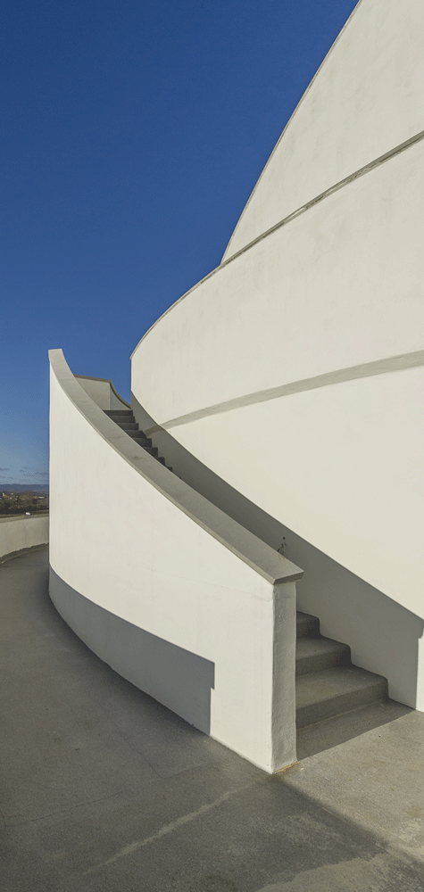

Heizen und Kühlen
Bei der Wahl des richtigen Ortes für Ihren Lebensraum ist ausreichend Energie vorhanden, um
im Winter zu heizen und im Sommer zu kühlen. Wir setzen hierfür Kohlestoff-Register ein. Durch
deren hohe Übertragungsfläche und größere Durchflussmenge können wir die Wärme der
Sonne auf dem Dach bzw. in den Räumen effizient aufnehmen.
Dabei kühlen wir die Photovoltaikzellen mit und steigern deren Leistungsfähigkeit. Mit dem
gewonnenen Sonnenstrom betreiben wir eine Wärmepumpe, die außen am Dach die
Temperatur noch weiter absenkt, heizen damit und sorgen für Warmwasser.
Wärmeüberschüsse speichern wir mit unseren Schneckenkollektoren in der Erde. Wenn die
Sonne über den Jahreslauf einmal nicht genügend Wärme liefert, gibt uns dies die Erde wieder.
In Summe liefern wir einen Beitrag zur Kühlung des Klimas, ohne CO2 in der Luft zu reduzieren.
Bernhard Wallner, Jänner 2021
Klima - Verbesserung
CO2 in der Luft ist an sich gut. Die dadurch erhöhte Lufttemperatur führt derzeit zum
problematischen Klimawandel. Durch unser Heiz- und Kühlsystem nehmen wir die Wärme in
der Luft auf, speichern diese und stellen die Temperatur wieder richtig.
Die Pflanzen nehmen im Zuge der Photosynthese den Kohlenstoff aus der Luft auf und wachsen
damit. Somit gilt aus Sicht der Pflanzen - je mehr CO2 in der Luft desto besser. Der Wald kann
CO2 gut gebrauchen. Wenn wir dem Wald - junge rasch wachsenden Bäume geben – helfen wir
dem Wald, das mehr an CO2 zu nutzen.
Würden wir das Holz aus den Wäldern verbrennen – kommt das CO2 wieder in die Luft. Nicht
besonders klug. Wenn das Holz auf Dauer jedoch in unseren Holzhäusern verbleibt, haben wir
richtig gehandelt. Es geht nicht nur um die Verwendung von Holz als Baustoff und der positiven
CO2-Bilanz des Lebensraum, sondern um viel mehr darüber hinaus!
Bernhard Wallner, Jänner 2021
Respekt dem Land gegenüber
Respektieren wir gemeinsam das Land auf dem Sie bauen. Mitteleuropa ist ein Land des Waldes.
Also bauen wir doch unsere Lebensräume aus dem uns natürlichen Material - dem Holz und
verbessern damit auch gleich die CO 2 Bilanz.
Mitteleuropa ist auch ein Land des Wasser. Nutzen wir doch das Wasser, um zu heizen bzw. zu
kühlen und das richtige Temperaturgefüge wieder herzustellen. Schaffen wir gemeinsam eine
biologische und ökologische Verbesserung des Landes.
Mitteleuropa ist auch ein Land des Lehms. Setzen wir unseren Lehm - als Teil der Erde - zur
Regulierung des Raumklimas ein. Erden wir uns richtig.
Das Land bestehet aber nicht nur aus der Materie an sich, sondern auch aus den Lebewesen. Zu
diesen gehören auch wir Menschen. Belassen wir wenn möglich doch die die Wertschöpfung in
der Region. Verantwortung gegenüber der Schöpfung, geht jedoch weit darüber hinaus.
Bernhard Wallner, Jänner 2021
Verantwortung der Erde gegenüber
Es gibt einen bekannten Satz aus der Bibel: "Macht Euch die Erde untertan!“ - Vers 28 des 1.
Kapitels der Genesis. Hier geht es um die Schöpfungsverantwortung des Menschen – eine
bedeutende Aufgabe.
Die Idee hinter der Schöpfungsverantwortung kann es nicht sein, dass wir unseren Lebensraum
auf eine Betonplatte stellen und die Erde versiegeln. Die Aufgabe wäre es doch die Erde des
Lebensraum zu fördern, zu pflegen und zu unterstützen.
Der Stelzenbau ist die richtige Antwort – heben wir unseren Lebensraum in die Luft und
respektieren wir den Boden – die Erde. Die moderne Bauweise erlaubt es uns die Stelzen aus
Beton (im übertragen Sinn „Felsen“) herzustellen und damit ein dauerhaft stabiles Fundament
zu haben und mehr Bodenfläche zu schaffen. Es geht aber nicht nur um die Umwelt, sondern
auch um uns Menschen.
Bernhard Wallner, Jänner 2021
das richtige Grundstück
Es geht nicht nur um die vorherigen Fragen und darum einen optimalen Lebensraum für uns
Menschen zu schaffen. Es geht auch darum, wie wir respektvoll das Grundstück nutzen. Was
passiert mit den Grünflächen, wie gehen wir mit dem Oberflächenwasser um, wie können wir
den Pflanzen und Tieren auf dem Grundstück helfen?
Nehmen wir z.B. das Wasser aus der Luft, speichern es auf dem Grundstück und geben es dann
der Erde zurück. Nutzen wir auch die Grauwässer - entziehen Ihnen im Winter die Temperatur
und nutzen diese im Sommer als Dünger für die Pflanzen und damit in Folge für die Tiere.
Bauen Sie Pflanzen an und versorgen Sie sich zum Teil auch selbst damit. Schaffen wir
Wasserrückhaltebecken. Nutzen wir das Gebäude als Beschattung für Pflanzen - die diese
brauchen. Andere pflanzen wir im Bereich des Schneckenkollektors, wo der Boden immer warm
ist. Pachten Sie eine kleine landwirtschaftliche Grünfläche in der Nähe. Machen Sie was daraus!
Bernhard Wallner, Jänner 2021
richtige Temperatur für die Umwelt und uns Menschen
Unsere Lebensräume helfen dabei die Umgebungstemperatur wieder auf das vorindustrielle
Niveau zu bringen. Eine wichtige Aufgabe. Es ist aber auch relevant, dass die Bedürfnisse von
uns Menschen als Teil der Natur respektiert werden. Die für unseren Körper richtige Temperatur
sollte gegeben sein.
Unser Körper erzeugt - vereinfacht ausgedrückt - die für uns notwendige Energie durch
Verbrennung der Nahrungsmittel, die wir aufnehmen. Dabei entsteht Temperatur, die wir
abgeben müssen, ansonsten überhitzen wir. Geben wir zu viel Energie ab, ist uns zu kalt. Können
wir zu wenig Energie abgeben, ist uns zu warm.
Bauen wir gemeinsam Lebensräume, die das richtige Temperaturniveau zur Verfügung stellen,
damit Sie Ihre Temperaturüberschüsse richtig abgeben können. Dann sind Sie in Balance und
Ihnen verbleibt mehr Energie, um sich anderen Aufgaben zu widmen.
Bernhard Wallner, Jänner 2021
richtige Luftfeuchtigkeit für uns Menschen
Der menschliche Körper braucht aber nicht nur die richtige Temperatur, sondern auch eine
entsprechende Feuchtigkeit. Unseren Körper umgibt Luft. Deren Feuchtigkeit sollte zwischen 40
und 60% liegen, dann kann unser Organismus am Besten seinen Feuchtigkeitshaushalt
regulieren.
Die Luft kann Feuchtigkeit nicht selbst produzieren, jedoch gut aufnehmen und abgeben. Der
Baustoff der der Luft hierbei am Besten hilft ist der Lehmputz, wenn die Luft zum richtigen
Zeitpunkt zum Lehm kommt.
Bauen wir Ihren Lebensraum also so, dass die Luft, wenn diese zu feucht ist (Luftfeuchtigkeit >
60 %) den Feuchtigkeitsüberschuss an den Lehm abgibt. Wenn die Luft zu trocken ist
(Luftfeuchtigkeit < 40 %) die Feuchtigkeit aus dem Lehm bekommt. Dann sind Sie auch auf dieser Ebene in Balance und Ihnen verbleibt mehr Energie.
Bernhard Wallner, Jänner 2021
richtige Feldstärke
Ein spannendes Thema! In der mitteleuropäischen Kultur wurde dieses Thema ab dem 13 Jhdt.
stigmatisiert und dann aus der gesellschaftlichen Wahrnehmung verdrängt. Die Atmosphäre
unseres Planeten hat nicht nur einen bestimmten Sauerstoffgehalt und eine Temperatur, sondern
auch eine Feldstärke.
Die Feldstärke ergibt sich durch das elektromagnetische Feld, dass im Kern unseres Planeten
erzeugt wird. Wenn wir Astronauten ins Weltall schicken, ist es klar, dass wir diesen ein
elektromagnetisches Feld mit geben müssen, ansonsten funktioniert deren Organismus nicht.
Wie überall gibt es einen optimalen Bereich. Durch Einflüsse wie Wasseradern, Verwerfungen,
Metalladern in der Erde kann es zu Abweichungen bei der Feldstärke kommen. Bauen wir doch
gemeinsam Lebensräume, die sicher stellen, dass die richtige Feldstärke gegeben ist. Dann muss
Ihr Körper weniger ausgleichen und Ihnen verbleibt mehr Energie.
Bernhard Wallner, Jänner 2021
saubere Luft
Dass wir gemeinsam nur Baustoffe einsetzen sollten, die die Luft nicht verschmutzen, ist
selbstredend. Unabhängig hiervon gibt es laufend eine Verschmutzung der Luft. Ihr Lebensraum
sollte somit für eine möglichst saubere Luft sorgen. Auf unserem Planeten gibt es einen Prozess,
der dies kann – die Photolyse.
Molekulare Verbindungen – die unser Organismus als Verschmutzung der Luft wahrnimmt –
werden an elektrisch negativer geladenen Oberflächen fixiert und mit Hilfe von Sonnenlicht
aufgespalten und können somit leichter abtransportiert werden.
Setzen Sie mit uns somit Lehmoberflächen bei Ihrem Lebensraum ein – und die molekularen
Verbindungen werden fixiert. Wenn wir dann auch noch an einem Ort bauen, an den
Sonnenlicht hinkommt, ausreichend große Öffnungen gegeben sind und Sie bei Sonnenschein,
nicht verdunkeln müssen, dann haben wir dies geschafft!
Bernhard Wallner, Jänner 2021
Anpassbarkeit des Raums
Der Lebensraum wirkt auf uns Menschen. Wie wir den Raum nutzen, wirkt wiederum auf
diesen. Wenn sich die Aufteilung des Raums auch an uns anpassen kann, dann entsteht eine
Symbiose – die zum Glück des Benutzer führen kann.
Die thermischen und statischen Bauteile des Lebensraums bleiben in der Nutzungsphase
bestehen. Der Fußrohboden und die Decke bilden eine durchgehende Ebene. Zwischenwände
können ergänzt oder weg genommen, Fenster vergrößert oder verkleinert werden. Somit
entsteht eine hohe Anpassbarkeit des Raums an die Lebensphase des Benutzers.
Bauen Sie mit uns Ihren Lebensraum, so wie sie ihn brauchen. Sollten es einmal mehr Zimmer
sein, so ist dies möglich. Die Fensteröffnungen sind veränderbar, falls einmal mehr oder weniger
Licht erforderlich ist. Teilen Sie bei Bedarf Ihre Wohnfläche auf und vermieten einen Teil hiervon.
Vielleicht ist für einen bestimmten Zeitraum auch eine Nutzung als Büro sinnvoll.
Bernhard Wallner, Jänner 2021
Mitarbeiten und Mitschaffen
Wir errichten Ihr Haus als Ausbauhaus. Das Fundament ist fertig. Der Holzbau ist errichtet. Das
Dach ist dicht. Strom, Wasser und Kanal sind bis zum Haus geführt. Es gibt eine Eingangstür und
ein Fenster. Der Rest wartet auf uns. Arbeiten Sie, Ihre Familie und Ihre Freunde doch mit. Dies
spart Geld, bereitet Freude und schafft einen Bezug zum Lebensraum.
Schneiden wir die Fensteröffnungen vor Ort aus, wenn Sie wissen, wie die Raumaufteilung ist.
Definieren Sie, wo die Nassräume sind oder zukünftig sein können. Dann erst bauen wir den
Holzfußboden in der richtigen Höhe. Dämmen wir die Wände gemeinsam. Bauen wir die
Zwischenwände. Ob die Fassade aus Holz oder aus Putz ist, entscheiden wir, wenn es soweit ist.
Erweitern Sie Ihren Lebensraum, erst dann wenn sie diesen brauchen.
Wenn Sie nicht mitarbeiten können, dann bauen wir Ihren Lebensraum natürlich auch gerne
nach ihren Angaben schlüsselfertig. Besser wäre es aber gemeinsam arbeiten und schaffen.
Bernhard Wallner, Jänner 2021
Generationenprojekte und Finanzierbarkeit
Bauen wir nicht nur für Sie, sondern auch für Ihre Nachkommen. Die Anpassbarkeit des Raumes
macht dies von der Nutzung her erst möglich. Die Wahl der Baustoffe und die richtige Bauweise
ist eine Grundvoraussetzung hierfür. Aber auch die Instandhaltung ist wichtig.
Wir begleiten Sie auch nach dem Erstbezug des Lebensraums. Machen gemeinsam die
Fertigstellung und kümmern uns um die Instandhaltung, falls Sie dies wünschen. Wir schützen
das Gebäude von Beginn an gegen Feuchtigkeitsschäden und haben eine auf die Bauweise
angepasste Sachversicherung.
Durch die schrittweise Fertigstellung Ihres Lebensraumes, fallen die Kosten erst dann an, wenn
dies notwendig ist und eine Finanzierbarkeit ist unter Umständen leichter. Vielleicht kann auch
eine Vermietung eines Teils der Räume helfen. Wir sind auch gerne bereit mit Ratenzahlungen
oder Mietkaufvereinbarungen Ihren Schaffungsprozess zu unterstützen.
Bernhard Wallner, Jänner 2021